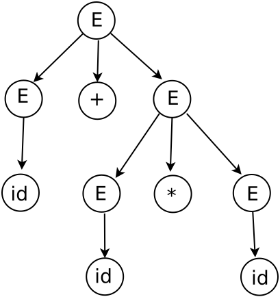
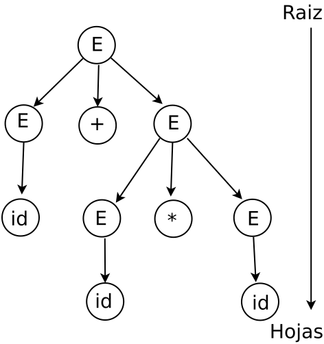
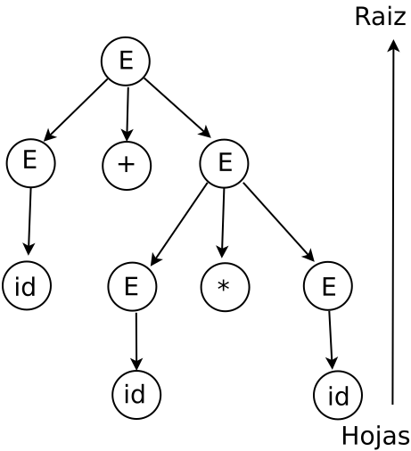

Analizadores sintácticos ascendentes
Este analizador también se conoce como analizador por desplazamiento y reducción. Este analizador intenta construir un árbol de análisis sintáctico para una cadena de entrada que comienza por las hojas (el fondo) y avanza hacia la raı́z (la cima).
Derivación por la derecha. Esta derivación se hace considerando el símbolo no terminal que esta en la extrema derecha.
Consideremos la siguiente gramática:
E → E + T | T
T → T * F | F
F → (E) | id
Se considera la siguiente cadena de tokens id + id * id, por lo que esta se obtiene por medio de las derivaciones derechas:
E ⇒ E + T ⇒ E + T * F ⇒ E + T * id ⇒
E + F * id ⇒ E + id * id ⇒ T + id * id ⇒
F + id * id ⇒ id + id * id
Esta derivación colocada en un árbol de análisis sintáctico:

Descendentes. El análisis se hace de la raiz a las hojas.

Se muestra en la tabla cómo el análisis se hace de la raiz a las hojas.
| ENTRADA | PILA | NUM. PRODUCCIÓN |
|---|---|---|
| ↑ public class {double radio;}$ | $S | 1 |
| ↑ public class {double radio;}$ | $};LV T{ class ● public | ← |
| public ↑class {double radio;}$ | $};LV T{ ● class public | ← |
| public class ↑{double radio;}$ | $};LV T●{ class public | ← |
| public class {↑double radio;}$ | $};LV ●T{ class public | 4 |
| public class {↑double radio;}$ | $};LV ●double{ class public | ← |
| public class {double ↑radio;}$ | $};●LV double{ class public | 5 |
| public class {double ↑radio;}$ | $};LV'● V double{ class public | 8 |
| public class {double ↑radio;}$ | $};LV' ● radio double{ class public | ← |
| public class {double radio↑;}$ | $};●LV' radio double{ class public | 7 |
| public class {double radio↑;}$ | $}●; ε radio double{ class public | ← |
| public class {double radio;↑}$ | $●}; ε radio double{ class public | ← |
| public class {double radio;}↑$ | ●$}; radio double{ class public | Acep |
Ascendentes. El análisis se hace de las hojas a la raiz.

Se muestra en la tabla cómo el análisis se hace de las hojas a la raiz.
| ENTRADA | PILA | ACCIÓN |
|---|---|---|
| ↑id ∗ id + id$ | $I0 | - |
| ↑id ∗ id + id$ | $I0 | d5 |
| id ↑∗ id + id$ | $I0 id I5 | r6 |
| id ↑∗ id + id$ | $I0 F I3 | r4 |
| id ↑∗ id + id$ | $I0 T I2 | d7 |
| id ∗ ↑id + id$ | $I0 T I2 * I7 | d5 |
| id ∗ id ↑+ id$ | $I0 T I2 * I7 id I5 | r6 |
| id ∗ id ↑+ id$ | $I0 T I2 * I7 F I10 | IR_A 10 |
| id ∗ id ↑+ id$ | $I0 T I2 | r3 |
| id ∗ id ↑+ id$ | $I0 E I1 | r2 |
| id ∗ id + ↑id$ | $I0 E I1 + I6 | d6 |
| id ∗ id + id↑$ | $I0 E I1 + I6 id I5 | d5 |
| id ∗ id + id↑$ | $I0 E I1 + I6 F I3 | r6 |
| id ∗ id + id↑$ | $I0 E I1 + I6 T I9 | r4 |
| id ∗ id + id↑$ | $I0 E I1 | r1 |
| id ∗ id + id↑$ | $I0 E I1 | acep |
Engineering a compiler, Keith D. Cooper and Linda Torczon, Pág. 1-3
Jerarquía de Chomsky
Definición de gramática. Es una cuarteta que se forma de lo siguiente.
G(N, T, S, P)
Dónde, los elementos de la gramática son los siguientes:
N: representa a los no terminales.
T: representa a los terminales.
S: representa el símbolo inicial.
P: representa el conjunto de producciones, P → α
Gramáticas regulares. Se usan para reconocer tokens.
La gramática 3 o gramática regular tiene la forma:
A → a
o
A → aB
que es la forma lineal derecha o bien.
A → a
o
A → Ba
que es la forma lineal izquierda. Donde A, B ∈ N , a ∈ T ∗ .
Engineering a compiler, Keith D. Cooper and Linda Torczon, Pág. 3
Gramáticas libres de contexto. Se usan para posicionar el orden de los tokens. La gramática 2 o gramática libre de contexto tiene la forma:
A → α
donde A ∈ N y α ∈ V ∗ .
Introduction to Compiler Design, Torben AEgidius Mogensen, Pág. 97